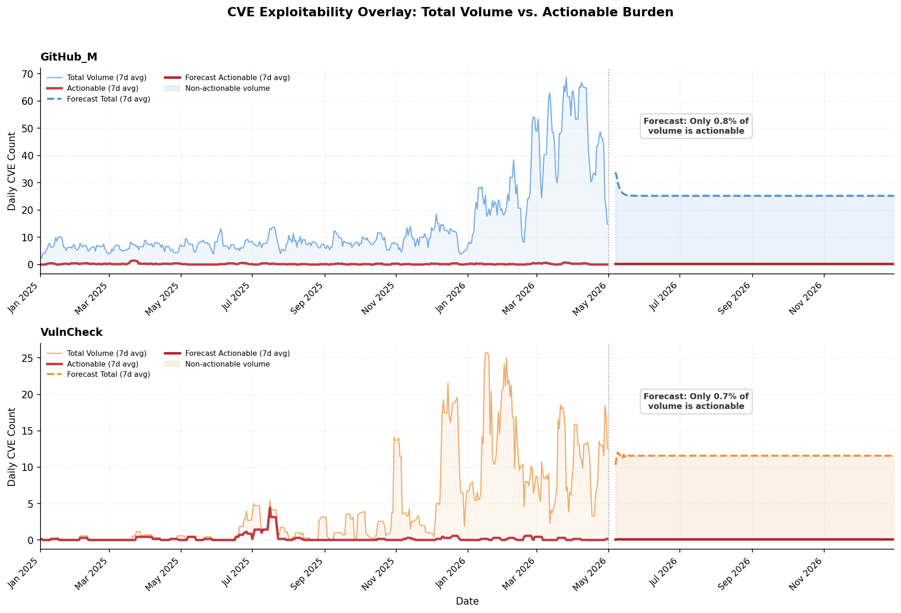

In February 2026, FIRST.org published its annual vulnerability forecast predicting roughly 43,757 CVEs would be published this year. Four months later, that number is already wrong by a wide margin. Actual publications are running 46% above the forecast, and the gap is widening.
This is not because software suddenly became less secure. The overshoot is almost entirely explained by two organizations dramatically scaling their CVE assignment operations: GitHub Security Advisories (GHSA) and VulnCheck. Together they added over 4,300 CVEs that the February model never anticipated.
The deeper question is whether this volume surge matters for defenders. Our analysis of CISA KEV and EPSS data shows that it largely does not. Less than 1% of the new volume from these CNAs meets a reasonable threshold for immediate action. Volume is not burden.
This page presents the full data, the revised forecast, and an exploitability overlay that separates signal from noise. All code and data are available in the GitHub repository.
The chart below shows every CVE published between January 1 and April 30, 2026. The raw daily counts (light line) are noisy due to weekend dips and batch-publication spikes, so the bold line shows a 7-day moving average to reveal the true trend. Three days stand out as statistical outliers, each driven by coordinated batch publications from multiple CNAs.
| Date | CVEs | Z-Score | What Happened |
|---|---|---|---|
| March 25 (Tue) | 619 | +3.81 | Patchstack (248) + Linux kernel (116) + Apple (87) published simultaneously |
| March 5 (Wed) | 490 | +2.72 | Patchstack WordPress plugin batch (268) + VulnCheck (49) |
| April 8 (Tue) | 485 | +2.68 | Patchstack (164) + GHSA (69) + Chrome stable channel update (60) |
All three outlier days fall on Tuesday or Wednesday, consistent with 42.8% of all CVE publications occurring on these two days. CNA operations clearly run on business-day schedules.
The divergence did not appear all at once. January came in 28% above forecast, which could have been normal variance. But the gap widened to 62% in March before stabilizing at 59% in April. This acceleration pattern points to a structural shift rather than random noise. The February model was trained on 2024 to 2025 behavior, and it simply could not account for the CNA operational expansions that began in late 2025.
| Month | Actual | Feb Forecast | Delta | % Over |
|---|---|---|---|---|
| January 2026 | 4,283 | 3,338 | +945 | +28.3% |
| February 2026 | 4,420 | 3,320 | +1,100 | +33.1% |
| March 2026 | 5,930 | 3,651 | +2,279 | +62.4% |
| April 2026 | 5,660 | 3,564 | +2,096 | +58.8% |
| Total (Jan to Apr) | 20,293 | 13,873 | +6,420 | +46.3% |
Two CNAs account for most of the overshoot. GitHub Security Advisories (GHSA, published under the CNA shortName "GitHub_M") grew from 785 CVEs in Jan to Apr 2025 to 4,313 in the same period this year, a 449% increase. This reflects an expanded curation team and a deliberate campaign to backfill CVE IDs for advisories that previously existed only as GHSA identifiers. VulnCheck, operating as a CNA of Last Resort that assigns IDs to vulnerabilities no other CNA has claimed, scaled from 26 CVEs to 837 (+3,119%).
On the decline side, Patchstack dropped 43% and MITRE fell 29%. But the net math is clear: the growers outweigh the shrinkers by a wide margin.
| CNA | 2025 | 2026 | Change | YoY | Context |
|---|---|---|---|---|---|
| GitHub_M (GHSA) | 785 | 4,313 | +3,528 | +449% | Scaled Ops Backfilling CVE IDs for existing GHSA-only advisories |
| VulnCheck | 26 | 837 | +811 | +3,119%* | Last Resort Assigning IDs to previously unowned vulnerabilities |
| VulDB | 1,419 | 2,210 | +791 | +56% | Steady growth in community-sourced disclosures |
| Linux | 804 | 1,022 | +218 | +27% | Kernel CNA continues steady growth |
| Chrome | 52 | 252 | +200 | +385%* | Increased Chromium/V8 disclosure cadence |
| Mozilla | 73 | 176 | +103 | +141% | AI Discovery Project Glasswing collaboration with Anthropic |
| Patchstack | 3,219 | 1,828 | -1,391 | -43% | Reduced WordPress plugin disclosure volume down significantly |
| MITRE | 1,823 | 1,293 | -530 | -29% | Declining as 400+ product-specific CNAs assign their own IDs |
* Small-base percentages (VulnCheck from 26, Chrome from 52) are visually dramatic but reflect a single quarter's ramp from near-zero. These growth rates will not persist at this magnitude.
We retrained an AutoARIMA model on the full daily time series from January 2020 through April 30, 2026 and projected forward through December. The revised model projects approximately 67,900 total CVEs for 2026, compared to FIRST.org's original 43,757. That is a 55% upward revision.
A few caveats are important. This model assumes the current publication regime persists. If GHSA's backfill campaign saturates or VulnCheck's pipeline plateaus, actual volumes could come in materially lower. The 80% prediction interval spans 55,000 to 80,000. The monthly projections below appear artificially smooth because ARIMA forecasts converge toward a level at longer horizons. Real months will be more volatile.
| Month | Revised | Feb Forecast | Delta |
|---|---|---|---|
| May 2026 | 5,807 | 3,782 | +2,025 |
| June 2026 | 5,655 | 3,655 | +2,000 |
| July 2026 | 5,912 | 3,821 | +2,091 |
| August 2026 | 5,981 | 3,750 | +2,231 |
| September 2026 | 5,854 | 3,690 | +2,164 |
| October 2026 | 6,117 | 3,790 | +2,327 |
| November 2026 | 5,986 | 3,520 | +2,466 |
| December 2026 | 6,254 | 3,876 | +2,378 |
| Full Year 2026 | ~67,900 | 43,757 | +24,100 (+55%) |
If the revised projection holds, 2026 will see the fastest growth in CVE publication history. The ecosystem crossed 1,000 published CVEs per week for the first time in March 2026 and has not dropped below that pace since. For context: in 2020, the full year produced 14,287 CVEs. We are now on track to exceed that in a single quarter.
The headline numbers are alarming, but they raise an important follow-up question: does this volume growth actually translate into more work for defenders? To find out, we enriched every CVE published by GitHub_M and VulnCheck with two exploitability signals. A CVE is classified as "Actionable" if it appears in the CISA Known Exploited Vulnerabilities (KEV) catalog or has an EPSS score above 10%. We then trained separate AutoARIMA models on the total volume and the actionable subset, forecasting both through December 2026.
The answer is clear: the growth is almost entirely non-actionable.

7-day rolling average. Dashed lines represent forecasted total volume. Solid lines represent forecasted actionable volume. Shaded region is the non-actionable gap. AutoARIMA models trained on daily counts from 2020 through April 2026.
| Forecasted Total (May to Dec) | 6,247 |
| Forecasted Actionable | 47 |
| Actionable Ratio | 0.8% |
| Non-Actionable | 99.2% |
| Forecasted Total (May to Dec) | 2,827 |
| Forecasted Actionable | 19 |
| Actionable Ratio | 0.7% |
| Non-Actionable | 99.3% |
The February 2026 forecast no longer reflects current CNA dynamics and requires revision. It was calibrated against 2024 to 2025 behavior that has since been superseded by structural shifts in how CVEs are assigned. Here is what practitioners should take away:
Plan for 5,800 to 6,200 new CVEs per month for the remainder of 2026, but recognize that raw volume alone is a poor proxy for risk. Prioritization should lean heavily on exploitability signals (EPSS scores, CISA KEV membership) and affected-product relevance rather than CVE count.
Filter by CNA source when triaging. A GHSA advisory for a transitive npm dependency carries different operational urgency than a Chrome or Linux kernel CVE. Not all CVEs deserve the same SLA.
Monitor NVD enrichment lag. Teams relying on NVD-enriched data should verify whether NVD analysis throughput is keeping pace with this publication volume. Enrichment lag creates blind spots where CVEs exist in the catalog but lack CVSS scores or CPE data.
This is not a vulnerability explosion. The underlying rate of software defects has not increased 46% in four months. The CVE catalog is expanding its coverage, particularly for open-source library vulnerabilities that previously went untracked or existed only in platform-specific databases. Whether this represents the CVE system catching up to reality or a dilution of signal quality is a matter of ongoing debate within the CNA community.
Patterns in Jan to Apr 2026:
This analysis uses the datePublished field from CVE V5
JSON records in the
cvelistV5 repository, which reflects when a CVE was published to the catalog rather
than when the vulnerability was discovered or disclosed. Some of the
observed growth, particularly from GHSA and VulnCheck, includes
backfill of previously known vulnerabilities now receiving CVE IDs
for the first time. The true rate of newly discovered
vulnerabilities is growing more slowly than these publication counts
suggest.
The forecast model is AutoARIMA (via Darts) trained on daily CVE counts from January 1, 2020 through April 30, 2026. The exploitability overlay uses CISA KEV (1,587 entries) and EPSS scores (330,544 CVEs) as of May 6, 2026.
All source code, data processing scripts, and analysis are available at github.com/jgamblin/FirstForecast.